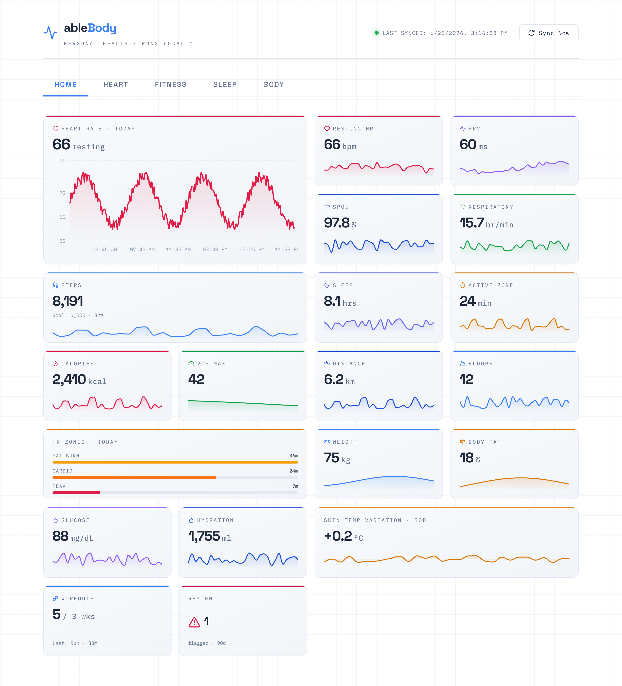

A personal health dashboard for my Mac that pulls my own data off my Fitbit Air through the new Google Health API (read-only) and renders every metric it can read — heart, sleep, fitness, and body signals — on a local instrument panel. Like ableBudget, it runs entirely on my machine, so the OAuth tokens and the health data never leave it.
The Home view: a bento board of every metric at a glance, each tile with its own sparkline — resting HR, HRV, SpO₂, sleep, steps, active zone minutes, VO₂ max, weight, glucose and more. Detail tabs (Heart, Fitness, Sleep, Body) break each system out in full. Built in the same white / blue / slate instrument language as the rest of ableLion.

I have been wearing a Fitbit Air for about a month and it has made me more accountable about my health. The new Google Health app that shipped with it is good, but it is someone else's dashboard. I want my own: a local Mac app that reads my data over the official API and shows it the way I want to see it.
The scope stays narrow on purpose: single-user, no login, no cloud, read-only. It pulls a handful of data types into a local store and draws charts. It never writes anything back to my Google account.
Same reason as ableBudget: I would rather own the dashboard than rent it. The Google Health app is closed and tied to a subscription (Google Health Premium for the coaching layer). The raw data is mine, and the API exists, so I can build exactly the view I want.
It is also good timing. Google is in the middle of retiring the legacy Fitbit Web API in September 2026 and moving everyone to the new Google Health API, so anything built now should be built on the new platform from day one.
The Fitbit Air has no public connection of its own — it syncs to Google's cloud, and the dashboard reads from there over the Google Health API. Authorization happens inside Google's own screen, and the tokens stay on my machine, exactly like the Plaid model in ableBudget.
Screenless tracker. Syncs heart rate, sleep, and activity up to Google Health over Bluetooth.
I authorize read-only scopes inside Google's own consent screen. My Google password never touches this app.
Exchanged server-side and stored locally. Never returned to the browser in any response.
Caches the tokens and the synced data points. Gitignored, treated like a password.
The server binds to 127.0.0.1 only and reads from health.googleapis.com/v4; nothing is exposed on the network and nothing is written back to Google.
A bento Home overview plus four detail tabs, together surfacing every data type the Google Health API exposes — backed by its read methods (list, rollUp, dailyRollUp). Sync is on-demand and incremental, paging through nextPageToken so re-running it never double-counts.
Deliberately the same shape as ableBudget — swap Plaid for the Google Health API and the privacy model carries straight over.
| Backend | Node + TypeScript, Express 5 | Binds to 127.0.0.1, CORS locked to the local frontend |
| Health data | Google Health API | Read-only REST at health.googleapis.com/v4; successor to the Fitbit Web API |
| Auth | Google OAuth 2.0 | Authorization Code + PKCE; restricted health scopes |
| Storage | better-sqlite3 | One local SQLite file; holds the refresh token + cached data points |
| Validation | zod | Env config and API payloads validated on startup & at the edge |
| Frontend | React 19 + Vite | Tabbed dashboard with shared chart & tile components |
| Charts | recharts | Area, bar, and sparkline trends across every metric |
| Theme | Light instrument panel | The white / blue / slate ableLion design system |
Build on the Google Health API, not the old Fitbit one. The legacy Fitbit Web API is being turned down in September 2026. The Fitbit Air and the new Google Health app are on the modern health.googleapis.com/v4 platform with Google OAuth 2.0, so that is where this starts.
The cloud API is the only Mac-friendly door. Android's on-device Health Connect store does not exist on macOS, so a Mac dashboard has to go through the cloud REST API. That is fine — it is read-only and works from any platform.
Tokens stay on the backend. The browser only kicks off the OAuth redirect; the access and refresh tokens are exchanged server-side and stored in the local database, never sent back in a response.
Mind the testing-mode token expiry. OAuth clients in “Testing” status expire their refresh token after 7 days. For a one-person app that means publishing the consent screen (or re-authorizing weekly) so the dashboard keeps syncing on its own.
Respect the rate limits. The API returns 429 when you exceed daily/per-minute quotas, so sync backs off and retries rather than hammering. A local cache means most views read from SQLite, not the network.